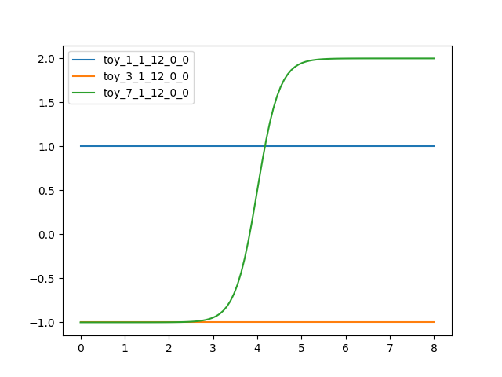

interptools¶
This module enables model developers to easily include linear and nonlinear interpolation techniques into their model methods.
The implemented classes SimpleInterpolator and SeasonalInterpolator serve as base
classes for (very complex) control parameters. Subclassing them is sufficient for
making the functionalities of the modules interptools, anntools, and ppolytools
available to the user.
The relevant models perform the interpolation during simulation runs, so we implemented
the related methods in the Cython extension module interputils.
Module interptools implements the following members:
InterpAlgorithmBase class for defining interpolation algorithms usable by classesSimpleInterpolatorandSeasonalInterpolator.
BaseInterpolatorBase class forSimpleInterpolatorandSeasonalInterpolator.
SimpleInterpolatorParameter base class for handling interpolation problems.
SeasonalInterpolatorRepresent interpolation patterns showing an annual cycle.
- class hydpy.auxs.interptools.InterpAlgorithm[source]¶
Bases:
ABC,_LabeledBase class for defining interpolation algorithms usable by classes
SimpleInterpolatorandSeasonalInterpolator.- abstract calculate_values() None[source]¶
Calculate the output values based on the input values defined previously.
- abstract calculate_derivatives(idx: int) None[source]¶
Calculate the derivatives of the output values with respect to the input value of the given index.
- abstract verify() None[source]¶
Raise a
RuntimeErrorif the actualInterpAlgorithmobject is ill-defined.
- abstract assignrepr(prefix: str, indent: int = 0) str[source]¶
Return a string representation of the actual
InterpAlgorithmobject prefixed with the given string.
- print_table(xs: Vector[float] | Matrix[float]) None[source]¶
Process the given input data and print the interpolated output values as well as all partial first-order derivatives.
The documentation on class
PPolyincludes some examples of a strictly univariate interpolator. Here, we take up some examples discussed for classANNto show that methodprint_table()also correctly reports all outputs and derivatives for multivariate interpolators.A single-input single-output example:
>>> from hydpy import ANN, nan >>> ann = ANN(nmb_inputs=1, nmb_neurons=(1,), nmb_outputs=1, ... weights_input=4.0, weights_output=3.0, ... intercepts_hidden=-16.0, intercepts_output=-1.0) >>> ann.print_table([0.0, 1.0, 2.0, 3.0, 4.0, 5.0, 6.0, 7.0, 8.0]) x y dy/dx 0.0 -1.0 0.000001 1.0 -0.999982 0.000074 2.0 -0.998994 0.004023 3.0 -0.946041 0.211952 4.0 0.5 3.0 5.0 1.946041 0.211952 6.0 1.998994 0.004023 7.0 1.999982 0.000074 8.0 2.0 0.000001
A multivariate example (three input and two output values result in six partial derivatives):
>>> ann.nmb_inputs = 3 >>> ann.nmb_neurons = (4,) >>> ann.nmb_outputs = 2 >>> ann.weights_input = [[ 0.2, -0.1, -1.7, 0.6], ... [ 0.9, 0.2, 0.8, 0.0], ... [-0.5, -1.0, 2.3, -0.4]] >>> ann.weights_output = [[ 0.0, 2.0], ... [-0.5, 1.0], ... [ 0.4, 2.4], ... [ 0.8, -0.9]] >>> ann.intercepts_hidden = [ 0.9, 0.0, -0.4, -0.2] >>> ann.intercepts_output = [ 1.3, -2.0] >>> ann.print_table([[-0.1, 1.3, 1.6]]) x1 x2 x3 y1 y2 dy1/dx1 dy2/dx1 dy1/dx2 dy2/dx2 dy1/dx3 dy2/dx3 -0.1 1.3 1.6 1.822222 1.876983 0.099449 -0.103039 -0.01303 0.365739 0.027041 -0.203965
A combined example (two inputs, one output):
>>> ANN(nmb_inputs=2, nmb_neurons=(2, 1), nmb_outputs=1, ... weights_input=[[1000.0, 500.0], ... [1000.0, 500.0]], ... weights_hidden=[[[1000.0], ... [-1000.0]]], ... weights_output=[[1.0]], ... intercepts_hidden=[[-750.0, -750.0], ... [-750.0, nan]], ... intercepts_output=[0.0], ... ).print_table([[0.0, 0.0], [1.0, 0.0], [0.0, 1.0], [1.0, 1.0]]) x1 x2 y dy/dx1 dy/dx2 0.0 0.0 0.0 0.0 0.0 1.0 0.0 1.0 0.0 0.0 0.0 1.0 1.0 0.0 0.0 1.0 1.0 0.0 0.0 0.0
- plot(xmin: float, xmax: float, idx_input: int = 0, idx_output: int = 0, points: int = 100, **kwargs: float | str | None) Figure[source]¶
Plot the relationship between particular input (idx_input) and output (idx_output) values defined by the actual
InterpAlgorithmobject.You need to define the lower and the upper bound of the x-axis via arguments xmin and xmax. You can increase or decrease the accuracy of the plot by changing the number of points evaluated within this interval (default is 100). For visual configuration, pass arbitrary
matplotlibpyplot plotting arguments as keyword arguments.See the documentation on classes
ANNandPPolyfor some examples.
- class hydpy.auxs.interptools.BaseInterpolator[source]¶
Bases:
_LabeledBase class for
SimpleInterpolatorandSeasonalInterpolator.- NDIM = 0¶
- TIME = None¶
- SPAN = (None, None)¶
- class hydpy.auxs.interptools.SimpleInterpolator(subvars: SubParameters)[source]¶
Bases:
BaseInterpolatorParameter base class for handling interpolation problems.
SimpleInterpolatorserves as a base class for parameter objects that accept anInterpAlgorithmobject as their “value”, which allows model users to select interpolation algorithms and configure them according to the data at hand. If, for example, linear interpolation is sufficient, one can prepare and hand over aPPolyobject:>>> from hydpy.auxs.interptools import SimpleInterpolator >>> simpleinterpolator = SimpleInterpolator(None) >>> simpleinterpolator simpleinterpolator(?)
>>> from hydpy import ANN, PPoly >>> simpleinterpolator(PPoly.from_data(xs=[0.0, 1.0], ys=[0.0, 2.0])) >>> simpleinterpolator simpleinterpolator( PPoly( Poly(x0=0.0, cs=(0.0, 2.0)), ) )
Besides handling an
InterpAlgorithmobject and connecting it to its model instance,SimpleInterpolatorprovides no own functionalities. Instead, its user-available properties and methods call the identically named properties and methods of the handled interpolator, thereby passing all possible arguments without modification. Hence, read the documentation on the subclasses ofInterpAlgorithmfor further information.The following technical checks ensure the proper implementation of all delegations:
>>> simpleinterpolator(ANN(nmb_inputs=2, nmb_outputs=3)) >>> simpleinterpolator.nmb_inputs 2 >>> simpleinterpolator.nmb_outputs 3 >>> simpleinterpolator.algorithm.inputs = 1.0, 2.0 >>> simpleinterpolator.inputs array([1., 2.]) >>> simpleinterpolator.algorithm.outputs = 3.0, 4.0, 5.0 >>> simpleinterpolator.outputs array([3., 4., 5.]) >>> simpleinterpolator.algorithm.output_derivatives = 6.0, 7.0, 8.0 >>> simpleinterpolator.output_derivatives array([6., 7., 8.]) >>> from unittest.mock import patch >>> with patch.object(ANN, "verify") as mock: ... assert simpleinterpolator.verify() is None >>> mock.assert_called_with() >>> with patch.object(ANN, "calculate_values") as mock: ... assert simpleinterpolator.calculate_values() is None >>> mock.assert_called_with() >>> with patch.object(ANN, "calculate_derivatives") as mock: ... assert simpleinterpolator.calculate_derivatives(3) is None >>> mock.assert_called_with(3) >>> with patch.object(ANN, "print_table") as mock: ... assert simpleinterpolator.print_table(xs=[1.0, 2.0]) is None >>> mock.assert_called_with(xs=[1.0, 2.0]) >>> kwargs = dict(xmin=0.0, xmax=1.0, idx_input=1, idx_output=2, points=10, opt="?") >>> with patch.object(ANN, "plot") as mock: ... mock.return_value = "figure" ... assert simpleinterpolator.plot(**kwargs) == "figure" >>> mock.assert_called_with(**kwargs)
- TYPE = 'interputils.SimpleInterpolator'¶
- property algorithm: InterpAlgorithm¶
The handled interpolation algorithm.
Trying to access the “I” object before defining it results in the following error:
>>> from hydpy.auxs.interptools import SimpleInterpolator >>> SimpleInterpolator(None).algorithm Traceback (most recent call last): ... RuntimeError: For parameter `simpleinterpolator` of element `?`, no interpolator has been defined so far.
- verify() None[source]¶
Raise a
RuntimeErrorif the currentInterpAlgorithmobject shows inconsistencies.
- calculate_values() None[source]¶
Calculate the output values based on the input values defined previously.
- calculate_derivatives(idx: int) None[source]¶
Calculate the derivatives of the output values with respect to the input value of the given index.
- print_table(xs: Vector[float] | Matrix[float]) None[source]¶
Process the given input data and print the interpolated output values as well as all partial first-order derivatives.
- class hydpy.auxs.interptools.SeasonalInterpolator(subvars: SubParameters)[source]¶
Bases:
BaseInterpolatorRepresent interpolation patterns showing an annual cycle.
Class
SeasonalInterpolatoris an alternative implementation of classSeasonalParameterdesigned for handling multipleInterpAlgorithmobjects that are valid for different times of the year. The total output ofSeasonalInterpolatoris the weighted mean of the outputs of itsInterpAlgorithmobjects. The required weights depend on the season and are available within theratiosmatrix.To explain this in more detail, we modify an example of the documentatiob on class
SeasonalParameter. Let us define aSeasonalInterpolatorobject that contains interpolators for January 1, March 1, and July 1, two of typeANNand one of typePPoly:>>> from hydpy import ANN, Poly, PPoly, pub, SeasonalInterpolator >>> pub.timegrids = "2000-01-01", "2000-10-01", "1d" >>> seasonalinterpolator = SeasonalInterpolator(None) >>> seasonalinterpolator( ... _1_1_12=ANN(nmb_inputs=1, nmb_neurons=(1,), nmb_outputs=1, ... weights_input=0.0, weights_output=0.0, ... intercepts_hidden=0.0, intercepts_output=1.0), ... _7_1_12=ANN(nmb_inputs=1, nmb_neurons=(1,), nmb_outputs=1, ... weights_input=4.0, weights_output=3.0, ... intercepts_hidden=-16.0, intercepts_output=-1.0), ... _3_1_12=PPoly(Poly(x0=0.0, cs=(-1.0,))))
The confusing time order in the initialisation call above does not pose a problem, as class
SeasonalInterpolatorperforms time sorting internally:>>> seasonalinterpolator seasonalinterpolator( toy_1_1_12_0_0=ANN( weights_input=[[0.0]], weights_output=[[0.0]], intercepts_hidden=[[0.0]], intercepts_output=[1.0], ), toy_3_1_12_0_0=PPoly( Poly(x0=0.0, cs=(-1.0,)), ), toy_7_1_12_0_0=ANN( weights_input=[[4.0]], weights_output=[[3.0]], intercepts_hidden=[[-16.0]], intercepts_output=[-1.0], ), )
Use method
plot()to visualise all interpolators at once:>>> figure = seasonalinterpolator.plot(xmin=0.0, xmax=8.0)
You can use the pyplot API of matplotlib to modify the figure or to save it to disk (or print it to the screen, in case the interactive mode of matplotlib is disabled):
>>> from hydpy.core.testtools import save_autofig >>> save_autofig("SeasonalInterpolator_plot.png", figure=figure)
Property
shapereflects the number of required weighting ratios for each time of year (in this example, 366 days per year) and each interpolator (in this example, three):>>> seasonalinterpolator.shape (366, 3)
The following plot shows the
ratiosused for weighting (note that the missing values for October, November, and December are irrelevant for the initialisation period):… image:: SeasonalInterpolator_ratios.png
For example, on July 1 (which is the 183rd day of a leap year), only the output of the third interpolator is relevant:
>>> from hydpy import print_values >>> print_values(seasonalinterpolator.ratios[182]) 0.0, 0.0, 1.0
On June 30 and July 2, the second and the first interpolators are also relevant:
>>> print_values(seasonalinterpolator.ratios[181]) 0.0, 0.008197, 0.991803 >>> print_values(seasonalinterpolator.ratios[183]) 0.005435, 0.0, 0.994565
Inserting data, processing this data, and fetching the output works as explained for class
SimpleInterpolator, except that you must additionally pass the index of the actual time of year. For example, the index value 182 activates the third interpolator only, configured as in the first example of the documentation onANN:>>> from hydpy import round_ >>> for input_ in range(9): ... seasonalinterpolator.inputs[0] = input_ ... seasonalinterpolator.calculate_values(182) ... round_([input_, seasonalinterpolator.outputs[0]]) 0, -1.0 1, -0.999982 2, -0.998994 3, -0.946041 4, 0.5 5, 1.946041 6, 1.998994 7, 1.999982 8, 2.0
To demonstrate that the final output values are the weighted mean of the output values of the different interpolators, we repeat the above example for January 13. For this day of the year, the first and the second interpolator have ratios of 0.8 and 0.2, respectively:
>>> print_values(seasonalinterpolator.ratios[12]) 0.8, 0.2, 0.0
Both interpolators calculate constant values. The sum of the outputs of the first (1.0) and the second interpolator (-1.0) multiplied with their weights for January 13 is 0.6.
>>> seasonalinterpolator.calculate_values(12) >>> round_(seasonalinterpolator.outputs[0]) 0.6
It is of great importance that all contained interpolators are consistent. Class
SeasonalInterpolatorperforms some related checks:>>> seasonalinterpolator = SeasonalInterpolator(None) >>> seasonalinterpolator.calculate_values(0) Traceback (most recent call last): ... RuntimeError: The parameter `seasonalinterpolator` of element `?` has not been properly prepared so far.
>>> seasonalinterpolator(1) Traceback (most recent call last): ... TypeError: Type `int` is not (a subclass of) type `InterpAlgorithm`.
>>> seasonalinterpolator(_13_1_12=PPoly(Poly(x0=0.0, cs=(0.0,)))) Traceback (most recent call last): ... ValueError: While trying to add a season specific interpolator to parameter `seasonalinterpolator` of element `?`, the following error occurred: While trying to initialise a TOY object based on argument value `_13_1_12` of type `str`, the following error occurred: While trying to retrieve the month, the following error occurred: The value of property `month` of TOY (time of year) objects must lie within the range `(1, 12)`, but the given value is `13`.
>>> seasonalinterpolator(PPoly(Poly(x0=0.0, cs=(0.0,)))) >>> seasonalinterpolator seasonalinterpolator( PPoly( Poly(x0=0.0, cs=(0.0,)), ) )
>>> seasonalinterpolator(PPoly(Poly(x0=0.0, cs=(0.0,))), ... _7_1_12=PPoly(Poly(x0=1.0, cs=(1.0,))), ... _3_1_12=PPoly(Poly(x0=20, cs=(1.0,)))) Traceback (most recent call last): ... ValueError: Type `SeasonalInterpolator` accepts either a single positional argument or an arbitrary number of keyword arguments, but for the corresponding parameter of element `?` 1 positional and 2 keyword arguments have been given.
>>> seasonalinterpolator(_1_1_12=ANN(nmb_inputs=2, nmb_outputs=1), ... _7_1_12=PPoly(Poly(x0=1.0, cs=(1.0,))), ... _3_1_12=PPoly(Poly(x0=20, cs=(1.0,)))) Traceback (most recent call last): ... RuntimeError: The number of input and output values of all interpolators handled by parameter `seasonalinterpolator` of element `?` must be defined in advance and be the same, which is not the case for at least two given interpolators.
For safety, each failure results in a total loss of the previously defined interpolators:
>>> seasonalinterpolator seasonalinterpolator()
You can add interpolators via attribute access:
>>> seasonalinterpolator.toy_1_1_12 = PPoly(Poly(x0=0.0, cs=(0.0,)))
If you set an attribute, everything updates automatically, e.g.:
>>> round_(seasonalinterpolator.ratios[0]) 1.0
The mentioned safety checks also apply when adding interpolators via attribute access:
>>> seasonalinterpolator.toy_7_1_12 = ANN(nmb_inputs=2, nmb_outputs=1) Traceback (most recent call last): ... RuntimeError: While trying to assign a new interpolator to parameter `seasonalinterpolator` of element `?` based on the string `toy_7_1_12`, the following error occurred: The number of input and output values of all interpolators handled by parameter `seasonalinterpolator` of element `?` must be defined in advance and be the same, which is not the case for at least two given interpolators.
Besides setting new interpolators, getting and deleting them also works:
>>> seasonalinterpolator.toy_1_1_12 = PPoly(Poly(x0=0.0, cs=(0.0,))) >>> seasonalinterpolator.toy_1_1_12 PPoly( Poly(x0=0.0, cs=(0.0,)), ) >>> del seasonalinterpolator.toy_1_1_12
There are two error messages related to specific attribute access problems:
>>> seasonalinterpolator.toy_1_1_12 Traceback (most recent call last): ... AttributeError: While trying to look up for an interpolator handled by parameter `seasonalinterpolator` of element `?` based on the string `toy_1_1_12`, the following error occurred: No interpolator is registered under a TOY object named `toy_1_1_12_0_0`.
>>> del seasonalinterpolator.toy_1_1_12 Traceback (most recent call last): ... AttributeError: While trying to remove an interpolator from parameter `seasonalinterpolator` of element `?` based on the string `toy_1_1_12`, the following error occurred: No interpolator is registered under a TOY object named `toy_1_1_12_0_0`.
>>> seasonalinterpolator.toy_1_1_12 = 1 Traceback (most recent call last): ... TypeError: While trying to assign a new interpolator to parameter `seasonalinterpolator` of element `?` based on the string `toy_1_1_12`, the following error occurred: Value `1` of type `int` has been given, but an object of type `InterpAlgorithm` is required.
Setting and deleting “normal” attributes is supported:
>>> seasonalinterpolator.temp = 999 >>> seasonalinterpolator.temp 999 >>> del seasonalinterpolator.temp >>> seasonalinterpolator.temp Traceback (most recent call last): ... AttributeError: 'SeasonalInterpolator' object has no attribute 'temp'
- TYPE = 'interputils.SeasonalInterpolator'¶
- refresh() None[source]¶
Prepare the actual
SeasonalInterpolatorobject for calculations.Class
SeasonalInterpolatorstores itsInterpAlgorithmobjects by reference. Therefore, despite all automated refreshings (explained in the general documentation on classSeasonalInterpolator), it is still possible to destroy the inner consistency of aSeasonalInterpolatorinstance:>>> from hydpy import ANN, SeasonalInterpolator >>> seasonalinterpolator = SeasonalInterpolator(None) >>> seasonalinterpolator.simulationstep = "1d" >>> jan = ANN(nmb_inputs=1, nmb_neurons=(1,), nmb_outputs=1, ... weights_input=0.0, weights_output=0.0, ... intercepts_hidden=0.0, intercepts_output=1.0) >>> seasonalinterpolator(_1_1_12=jan) >>> jan.nmb_inputs, jan.nmb_outputs = 2, 3 >>> jan.nmb_inputs, jan.nmb_outputs (2, 3) >>> seasonalinterpolator.nmb_inputs, seasonalinterpolator.nmb_outputs (1, 1)
Due to the Cython implementation of the actual interpolation, such an inconsistencies might result in a program crash without any informative error message. Therefore, whenever you are think some inconsistency might have crept in and you want to repair it, call method
refresh()manually:>>> seasonalinterpolator.refresh() >>> jan.nmb_inputs, jan.nmb_outputs (2, 3) >>> seasonalinterpolator.nmb_inputs, seasonalinterpolator.nmb_outputs (2, 3)
- verify() None[source]¶
Raise a
RuntimeErrorand remove all handled interpolators if they are defined inconsistently.Class
SeasonalInterpolatorstores itsInterpAlgorithmobjects by reference. Therefore, despite all automated refreshings (explained in the general documentation on classSeasonalInterpolator), it is still possible to destroy the inner consistency of aSeasonalInterpolatorinstance:>>> from hydpy import ANN, pub, SeasonalInterpolator >>> seasonalinterpolator = SeasonalInterpolator(None) >>> pub.options.simulationstep = "1d" >>> jan = ANN(nmb_inputs=1, nmb_neurons=(1,), nmb_outputs=1, ... weights_input=0.0, weights_output=0.0, ... intercepts_hidden=0.0, intercepts_output=1.0) >>> seasonalinterpolator(_1_1_12=jan) >>> jan.nmb_inputs, jan.nmb_outputs = 2, 3 >>> jan.nmb_inputs, jan.nmb_outputs (2, 3) >>> seasonalinterpolator.nmb_inputs, seasonalinterpolator.nmb_outputs (1, 1)
Due to the Cython implementation of the actual interpolation, such an inconsistencies might result in a program crash without any informative error message. Therefore, whenever you are think some inconsistency might have crept in, and you want to know if your suspicion is correct, call method
verify().>>> seasonalinterpolator.verify() Traceback (most recent call last): ... RuntimeError: The number of input and output values of all interpolators handled by parameter `seasonalinterpolator` of element `?` must be defined in advance and be the same, which is not the case for at least two given interpolators.
>>> seasonalinterpolator seasonalinterpolator()
>>> seasonalinterpolator.verify() Traceback (most recent call last): ... RuntimeError: Seasonal interpolators need to handle at least one interpolation algorithm object, but for parameter `seasonalinterpolator` of element `?` none is defined so far.
- property algorithms: Tuple[InterpAlgorithm, ...]¶
A sorted
tupleof all handled interpolators.